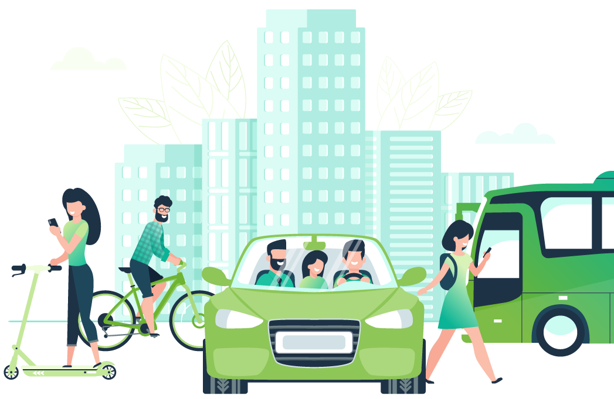
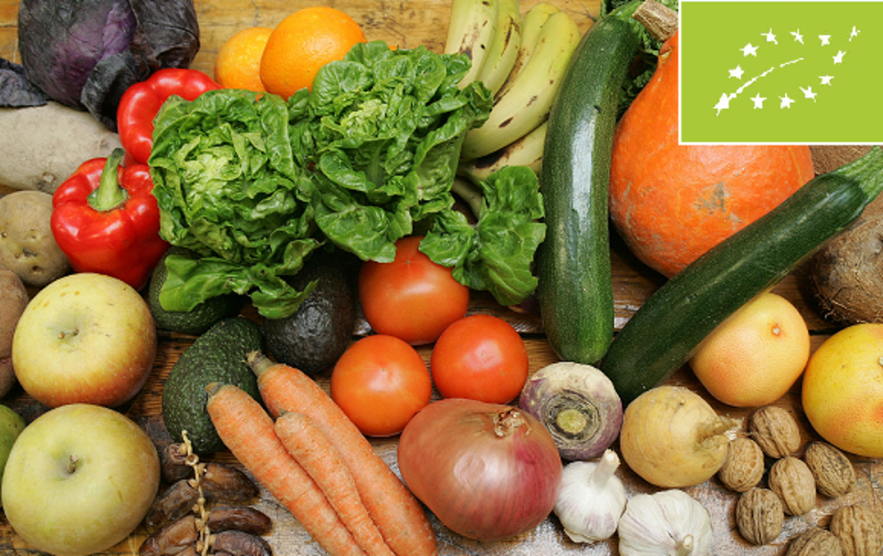

La contaminación ambiental es uno de los principales problemas que se está dando a nivel global desde ya hace mucho tiempo, afectando a todo el planeta, a su biodiversidad y a la salud de las personas. Son diferentes los tipos de contaminación que existen, todo depende de la zona o elemento que se ve afectado y del tipo de agentes contaminantes que producen el problema. Toda contaminación está causando grandes consecuencias a las que hay que poner solución. Aún estamos a tiempo de paliar los efectos de la contaminación ambiental, pero quizás mañana no. Se entiende por contaminación ambiental cuando existe la presencia de sustancias nocivas en el agua, aire o suelo. Las sustancias nocivas son lo que llamamos contaminantes ambientales, pudiendo tener diferente origen. Además, se encuentran en diferentes concentraciones y en diferentes lugares.Hay muchos tipos de contaminacion puede darse en distintos contextos y distintos grados, generalmente con consecuencias negativas para los seres vivos en general, entre ellos la propia humanidad. Se estima, por ejemplo, que las distintas formas de contaminación ambiental le costaron la vida en 2015 a millones de personas en todo el mundo. EN ESTE ARTICULO MIRAREMOS ALGUNAS MANERAS DE EVITAR LA CONTAMINACION A NUESTTRO MEDIO AMBIENTE
MEDIDAS PARA EVITAR LA CONTAMINACION AMBIENTAL
Existen diferentes formas de evitar la contaminación ambiental según el momento y el lugar en el que nos encontremos. Hay que tener en cuenta que, aunque los gobiernos y las grandes empresas e instituciones cumplen un papel fundamental en esta tarea, el ciudadano de a pie también puede influir en la contaminación ambiental con sus acciones individuales.En la actualidad, la contaminación ambiental es uno de los problemas más importantes que enfrentamos como sociedad. La sobreexplotación de recursos naturales, la emisión de gases contaminantes y la generación de residuos son algunas de las principales causas de este fenómeno. Sin embargo, todos podemos contribuir a reducir la contaminación y cuidar el medio ambiente a través de acciones sencillas en nuestra vida diaria.
REUTLIZAR REDUCIR Y RECICLAR
Una forma de reducir y evitar la contaminación ambiental es poner en marcha las 3R de la ecología: Reducir, Reutilizar y Reciclar, tanto por parte de los gobiernos como en las escuelas, los lugares de trabajo y cada uno en su hogar. Los tres aspectos son pilares para lograr controlar y reducir el problema de la contaminación en el mundo. Pero, como reciclar es uno de los pilares a tener en cuenta para lograr reducir y evitar la contaminación del planeta.El reciclaje es de vital importancia para la conservación del medio ambiente. A medida que la población y el consumo aumentan, también lo hace la generación de residuos. Si estos residuos no se gestionan adecuadamente, pueden causar graves daños al entorno natural.
El reciclaje nos permite reducir la cantidad de residuos que van a parar a los vertederos y a los océanos, evitando así la contaminación del suelo, del agua y del aire. Al reciclar, se aprovechan los materiales que ya no son útiles y se les da una segunda vida, evitando la extracción de recursos naturales y la producción de nuevos materiales. Un consejo para contribuir al reciclaje es separar correctamente los residuos en los contenedores correspondientes.Además, el reciclaje también ayuda a reducir la emisión de gases de efecto invernadero y a combatir el cambio climático. Al reciclar, se reduce la demanda de energía en la producción de nuevos materiales, lo que se traduce en una menor emisión de gases contaminantes.
Otro aspecto importante del reciclaje es la protección de los recursos naturales. Al reutilizar materiales, se evita la sobreexplotación de recursos. Esto contribuye a preservar los ecosistemas.Existen diferentes tipos de materiales que se pueden reciclar, siendo algunos de los más comunes:
Papel: El papel es uno de los materiales más fáciles de reciclar. Al reciclar papel, se evita la tala de árboles y se reduce la contaminación del agua y del aire.
Vidrio: El vidrio también puede ser reciclado de manera eficiente. Al reciclar vidrio, se ahorra energía y se evita la acumulación de este material en los vertederos.
Plástico: El plástico es uno de los materiales más problemáticos en términos de reciclaje. Sin embargo, existen diferentes tipos de plástico que sí pueden ser reciclados, como el PET y el HDPE.
Metales: Los metales, como el aluminio y el acero, son materiales muy valiosos para el reciclaje. Al reciclar metales, se ahorra energía y se reduce la contaminación del agua y del aire.
Estos son solo algunos ejemplos de los materiales más comunes que se pueden reciclar. Sin embargo, existen muchos otros materiales, como el cartón, las pilas, los aparatos electrónicos y el textil, que también pueden ser reciclados.
UTILIZA TRANSPORTE SOSTENIBLE
Una de las principales fuentes de contaminación ambiental es el transporte. Utilizar medios de transporte sostenibles como la bicicleta, el transporte público o compartir el coche con otras personas puede ayudar a reducir las emisiones de gases contaminantes. Además, estas opciones también pueden ser beneficiosas para tu salud, ya que te permiten realizar ejercicio físico y evitar el sedentarismo.Utiliza el transporte público siempre que sea posible.
Comparte el coche con otras personas para reducir el número de vehículos en circulación.
Considera la posibilidad de adquirir un vehículo eléctrico o híbrido para reducir las emisiones de gases contaminantes.La transición hacia el transporte sostenible no solo beneficia al medio ambiente, sino que también tiene impactos positivos en la economía y la sociedad.
Además de ofrecer servicios e infraestructura para la movilidad de las personas y las mercancías, esta modalidad actúa como un acelerador transversal que puede propiciar el progreso hacia otros objetivos cruciales.
Entre esos objetivos se encuentran “la erradicación de la pobreza en todas sus dimensiones, la reducción de las desigualdades, el empoderamiento de las mujeres y la lucha contra el cambio climático", sostiene el sitio web de las Naciones Unidas.anto si se trata de compromisos laborales como de actividades recreativas, las elecciones sobre cómo las personas se desplazan hacia otros destinos, ya sea en automóvil, avión, bicicleta, mediante actividades deportivas como correr o hacer senderismo, o utilizando el transporte público, influyen significativamente en las emisiones de carbono. Por eso, la Organización de las Naciones Unidas (ONU) recomienda:
Caminar o ir en bicicleta: ya que son las formas de movilizarse que producen menos emisiones de carbono.
Usar el transporte público: sustituir el uso del coche por el transporte público puede llegar a reducir hasta en 2.2 toneladas la cantidad anual de emisiones de carbono por persona.
Compartir el coche: si no queda más remedio que viajar en coche, compartir este medio de transporte reducirá las emisiones de carbono hasta en 1 tonelada.

AHORRA ENERGIA EN EL HOGAR
El consumo de energía en los hogares es otra de las principales fuentes de contaminación ambiental. Adoptar medidas de ahorro energético puede ayudar a reducir las emisiones de gases contaminantes y también puede suponer un ahorro económico para tu bolsillo. A continuación, te presentamos algunas acciones que puedes llevar a cabo en tu hogar:
Apaga los electrodomésticos y las luces cuando no los estés utilizando.
Utiliza bombillas de bajo consumo o LED.
Aprovecha al máximo la luz natural y evita encender luces durante el día.
Utiliza electrodomésticos eficientes energéticamente, con etiquetas de eficiencia energética A++ o superior.
Regula la temperatura de tu hogar de manera adecuada, evitando calefacciones o aires acondicionados innecesarios.El aumento global de la temperatura, el crecimiento del nivel del mar y la mayor incidencia de las catástrofes naturales son algunas de las consecuencias más visibles del cambio climático. Los especialistas señalan a las emisiones de gas invernadero como las principales responsables y la industria energética se encuentra en el centro de la escena.
En la actualidad, según un informe de la Fundación Heinrich Böll, que utilizó datos del Sistema de Información Energética de América Latina y el Caribe de la Organización Latinoamericana de Energía (OLADE), gran parte de la energía utilizada en esta región se obtiene de fuentes fósiles, seguida por la hidroeléctrica. La participación de las energías renovables en la matriz energética de los países latinoamericanos, en cambio, no supera, en promedio, el 16%.
Teniendo en cuenta este escenario, los efectos del cambio climático (como la prolongación de las sequías) y el carácter no renovable de los combustibles fósiles, es de esperar un aumento de los costes de generación de energía. Este mayor valor se produce, principalmente, por la falta de materias primas utilizadas en la producción de energía, como el agua, el carbón y el petróleo.
CONSUME PRODUCTOS ECOLOGICOS
El consumo responsable es otro aspecto importante para reducir la contaminación ambiental. Optar por productos ecológicos o de comercio justo puede contribuir a la protección del medio ambiente y a la promoción de prácticas sostenibles. Aquí te presentamos algunas acciones que puedes llevar a cabo:
Elige productos orgánicos y de temporada, que no hayan sido tratados con pesticidas o fertilizantes químicos.
Da preferencia a productos locales y de proximidad para reducir la huella de carbono asociada al transporte de mercancías.
Reduce el consumo de carne y opta por una alimentación más basada en vegetales, lo cual tiene un menor impacto ambiental.
Evita el consumo de productos desechables y opta por alternativas reutilizables, como botellas de agua de acero inoxidable o bolsas de tela.Consumir productos ecológicos es algo cada vez más habitual a medida que más y más personas van tomando conciencia sobre la importancia de optar por una alimentación orgánica, más sana y natural y respetuosa con el medioambiente: algo que cobra cada vez más importancia debido a la degradación que sufren muchos ecosistemas de nuestro planeta.
Además al optar por este tipo de productos no sólo reducimos el uso de productos químicos tóxicos para la naturaleza, tales como pesticidas o herbicidas, sino que también evitamos que muchas de estas sustancias lleguen hasta nuestra mesa y acaben en nuestro organismo. Cada vez resulta más evidente que consumir leche, huevos, verduras o fruta ecológica es más saludable.Lo cierto es que este tipo de productos tienen importantes beneficios para nuestra salud y bienestar.

CUIDADO DEL USO DEL AGUA
El agua es un recurso vital pero limitado, por lo que su uso responsable es fundamental. Aquí te presentamos algunas acciones que puedes llevar a cabo para cuidar el uso del agua.Cierra los grifos cuando no los estés utilizando, especialmente al cepillarte los dientes o lavarte las manos.
Opta por duchas en lugar de baños para reducir el consumo de agua.
Reutiliza el agua de la lluvia para regar las plantas o limpiar el hogar.
Utiliza electrodomésticos eficientes en el consumo de agua, como lavadoras y lavavajillas.Cuando hablamos del cuidado del agua, nos referimos al uso racional del agua. Esto implica velar por la protección de las fuentes de agua limpia y consumible en nuestro planeta, procurando no contaminarla, no malbaratarla y así preservar este líquido vital no sólo para nuestra especie, sino para la vida entera en el planeta Tierra.
Como bien sabemos, el agua es indispensable para sostener el clima del planeta estable, para procesos vitales de todos los organismos (como la fotosíntesis) y para redistribuir determinados elementos químicos a lo largo del planeta (como el carbono).
Al mismo tiempo, es un ingrediente abundante y común de la gran mayoría de las actividades humanas. Para empezar, se utiliza en la vida cotidiana, por ejemplo para ducharnos, lavar, evacuar nuestros desperdicios, etc. Por otro lado, se emplea en labores agrícolas, industriales. Además, nuestro organismo requiere su consumo directo, ya que está compuesto en un 70% de agua.Esto pudiera resultar obvio, pero sin agua no podríamos vivir. Todos los ciclos bioquímicos y físicos de nuestro planeta involucran el agua
PROMUEVE LA REFORESTACION Y LA BIODIVERSIDAD
"
La vegetación y la biodiversidad son fundamentales para mantener el equilibrio en los ecosistemas y reducir la contaminación ambiental. Aquí te presentamos algunas acciones que puedes llevar a cabo:
Planta árboles y arbustos en tu entorno, ya sea en tu jardín o en espacios comunitarios.
Crea un huerto urbano en tu hogar para cultivar tus propios alimentos.
Evita el uso de pesticidas y opta por métodos de control de plagas naturales.
Promueve la creación de espacios verdes en tu comunidad y participa en actividades de reforestación.Únete a grupos de voluntariado que se dediquen a la reforestación de áreas degradadas.
Apoya proyectos de restauración de ecosistemas y conservación de la biodiversidad.
Educa a otros sobre la importancia de cuidar el medio ambiente y promueve la participación en este tipo de actividades. La reforestación es una acción imprescindible para la supervivencia del hombre y otros seres vivos en este planeta. Algunas de las funciones más importantes de los árboles y los bosques, y que pueden entenderse como parte de la propia importancia de la reforestación, son:
Los árboles (y las plantas) realizan la fotosíntesis. En este proceso, utilizan parte del dióxido de carbono que nosotros emitimos al respirar o en nuestras actividades diarias y lo transforman en oxígeno, entre otros productos. Por lo tanto, la reforestación es importante para la producción de oxígeno en nuestro planeta y así abastecer a los seres vivos que en él habitan.
Los árboles de las grandes extensiones boscosas tienen la capacidad de atrapar y eliminar partículas contaminantes como polvo, polen, humo y cenizas que pueden resultar perjudiciales para nuestros pulmones.
Los árboles con su efecto de utilizar y convertir el dióxido de carbono en oxígeno, ayudan a disminuir el efecto invernadero en nuestro planeta. Este efecto se crea porque los gases como el CO2 y otros hacen que el calor de la Tierra se retenga en la atmósfera y no sea liberado, contribuyendo al aumento del calentamiento global.
Los árboles son agentes importantes para asegurar la conservación del agua y disminuir la erosión del suelo. Gracias a la reforestación, conseguimos frenar las corrientes de aguas torrenciales en el suelo y reducir la erosión y sedimentación de los ríos.
Los árboles y los bosques sirven de hábitat de gran diversidad de especies en la Tierra, entre ellos los organismos descomponedores, aves o distintas especies micológicas. Con la reforestación, recuperaríamos esta biodiversidad perdida en esa zona y que es realmente necesaria.
Los árboles reducen el llamado efecto isla térmica o isla de calor, que se da en las ciudades como consecuencia de la retención de calor por materiales como el hormigón y otros. De esta manera, las reforestaciones pueden modificar el clima local y bajar un poco las temperaturas.
EVITA EL USO DE PRODUCTOS QUIMICOS TOXICOS
El uso de productos químicos tóxicos, tanto en el hogar como en el trabajo, puede tener un impacto negativo en el medio ambiente y en nuestra salud. Aquí te presentamos algunas acciones que puedes llevar a cabo:
Utiliza productos de limpieza ecológicos o caseros, evitando aquellos que contengan químicos tóxicos.
Evita el uso de pesticidas y herbicidas sintéticos en tu jardín o huerto.
Lee las etiquetas de los productos y elige aquellos que sean respetuosos con el medio ambiente.
Descarta correctamente los productos químicos y no los viertas por el desagüe o en la basura común.Los plaguicidas, también conocidos como sustancias químicas agrícolas, son sustancias que se utilizan para proteger a las plantas contra las plagas. Incluyen los herbicidas para destruir malas hierbas, los fungicidas para evitar ciertas enfermedades, y los insecticidas para acabar con insectos nocivos. Por desgracia, estas sustancias químicas no solo permiten acabar con elementos indeseados, sino que también pueden provocar daños en nuestra salud y el medio ambiente.
Los plaguicidas o los productos fitosanitarios contienen al menos una sustancia activa y se utilizan para:
proteger a las plantas contra plagas y enfermedades;
influir en el crecimiento de las plantas;
preservar productos vegetales;
destruir o impedir el crecimiento de plantas no deseadas.Los ftalatos son sustancias químicas tóxicas que se encuentran en productos plásticos, cosméticos y alimentos y que están relacionadas con los cambios hormonales y la muerte prematura.
Los alimentos procesados son especialmente propensos a contener ftalatos absorbidos a lo largo de la cadena de suministro.
Los ftalatos también se añaden a algunos productos de cuidado personal para hacerlos más duraderos.
Los ortoftalatos, o ftalatos para abreviar, son una familia de compuestos químicos tóxicos que pueden encontrarse en cientos, si no miles, de los productos que compras.
Estas sustancias químicas sintéticas se utilizan para ablandar el plástico y convertirlo en vinilo flexible. Consiguen el mismo efecto en los esmaltes de uñas y sprays para el pelo. Pero en los seres humanos, una exposición excesiva a los ftalatos puede afectar a importantes funciones hormonales.
Un estudio reciente relacionó la exposición a los ftalatos con la muerte prematura de adultos estadounidenses, especialmente con las enfermedades cardíacas; que se relacionaron con los plastificantes en otros estudios. Incluso una ligera alteración hormonal puede tener efectos dominó en los sistemas reproductivo e inmune; así como en el cerebro en desarrollo en el útero.
Dado que los ftalatos están en una gran variedad de productos, es casi imposible evitarlos por completo. Pero hay algunas medidas que puedes tomar para reducir tu exposición hasta que las empresas y los gobiernos hagan algo para eliminar los ftalatos.
AUDIO
¿CUAL ES LA IMPORTANCIA DE EVITAR LA CONTAMINACION?
Reducir la contaminación es fundamental para proteger el medio ambiente y preservar la salud de los ecosistemas y de los seres vivos que dependen de ellos. La contaminación puede tener efectos negativos en la calidad del aire, del agua y del suelo, así como en la biodiversidad y en la salud humana. Además, la reducción de la contaminación contribuye a mitigar el cambio climático y a garantizar un futuro sostenible para las generaciones venideras.La disminución de la contaminación ambiental es fundamental para garantizar la salud y el bienestar de todas las personas, así como para proteger nuestro planeta. La contaminación atmosférica, en particular, presenta graves consecuencias que afectan tanto a nivel individual como a nivel global.
En primer lugar, la contaminación del aire es responsable de casi 9 millones de muertes anuales en todo el mundo. Esto la convierte en un problema más mortífero que la malnutrición. Las causas de estas muertes incluyen el smog, la exposición al aire sucio dentro de las viviendas, los suelos contaminados y el agua no potable.
Los países en desarrollo son los más afectados, ya que alrededor del 95% de las muertes relacionadas con la contaminación ocurren en estos países. La exposición a la contaminación afecta la esperanza y calidad de vida, así como el potencial económico de las personas, lo que dificulta la reducción de la pobreza.
Además, se espera que la contaminación atmosférica empeore debido a la acelerada urbanización. Se estima que la población urbana mundial se duplicará para el año 2050, y en África se triplicará. Esto aumentará la exposición a la contaminación y sus efectos negativos.
Por todas estas razones, es crucial tomar medidas para reducir la contaminación ambiental. MAS INFORMACION SOBRE EVITAR CONTAMINACION